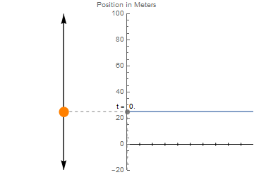
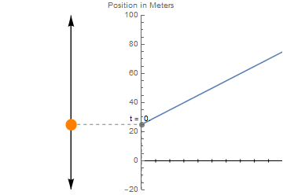
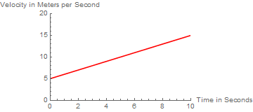
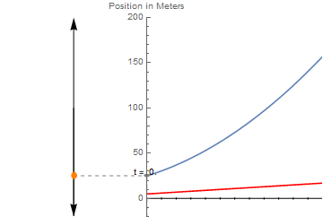
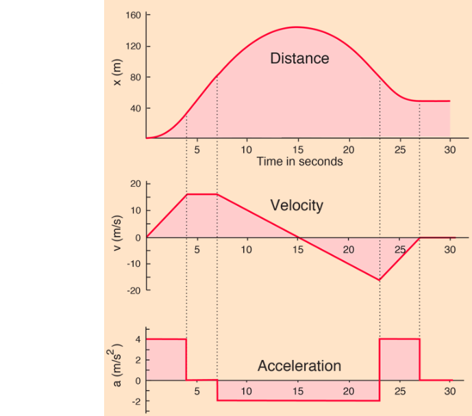

Make sure to include all tables, plots, pictures, drawings, screenshots or anything else asked of you in the exercises in your report, as well as answers to all the questions.
All responses and answers should contain the correct number of sig figs and should include units when needed.
For 1D motion of a body, we are typically concerned with three variables which characterize the trajectory:
These three variables are interrelated, as each quantity tells you about the change over time of the previous.
To make our discussion concrete, we should review some basic physics in the case that there are no forces acting on the body of interest.
Let's imagine that that at , we have a ball at rest at . What is its position at s? Since the ball is stationary --- otherwise, m/s --- of course it will still be !

Now we image that this ball is known to have a initial velocity m/s, with no forces acting upon it. Since no forces are acting on the ball, the change in the velocity must be zero, so m/s for all time (not that does not appear!).

Since the velocity tells you how an object's position is changing in time, and we know that the velocity in the absence of force is constant, we can say that the position of the ball will increase by m per second that passes. From this, we deduce that at s, the ball is now at m m/s s = m.
Generally, in the absence of external forces, we can capture this relationship as:
$$ x(t) = v_0 t + x(0)$$
Once we include external forces acting on a body, we now must think about how the velocity changes over time.
Consider now that our ball is 1kg and being pushed with a force of 1N. From , we find that m/s
Similar to our equation for change in position, our equation for velocity is now: $v(t) = a t + v_0 $

So that at , we can now calculate that our ball has a velocity of m/s.
This presents us with an issue when calculating the new position of our ball, however, since now the velocity is continually changing: our previous equation is no longer correct.
Given the relationship between velocity and acceleration above, it is an exxcerise in calculus to show the following relatiionship is true:

Putting it all together, we have that m
We have two important qualitative statements to make from the discussion above:
The following figure from Hyperphysics shows the trajectory of a body whose acceleration is constant for segments of time.

Looking at this graph, answer the following questions:
Question 1
Q1: Find the places where the acceleration is m/s. In these regions, describe the behavior of the velocity graph? Is the position graph here curved or linear?
Q2: Find the region of the graph where the acceleration is negative. Try to estimate the slope of the velocity graph. How does the slope compare to the value of the acceleration?
Q3: In the region that the acceleration is negative, how would you describe the shape of the position curve?
When dropped from the same height, which one of these objects – stone or feather – will hit the ground first? Most people will say, “That depends.” If this is done in a normal room environment, the stone wins. If it is done in an evacuated cylinder, both hit the bottom at the same time.
In the next activity, you will watch videos of someone dropping a variety of balls from a sixth-floor walkway. For one drop, you will measure and record height and time data, and for the rest, you will be given the data. You will plot these data, and use your results to test the validity of one of the motion formulas, namely,
where y is the position, the initial velocity, the acceleration, and t the time.
Exercise 1
In this section, you will watch several videos, each of which will show a different type of ball being dropped from the sixth-floor walkway of Broida Hall. For one of the videos, you will periodically make the video pause, and take height and time data. For the others, you will be given the data. You will then plot the data in two different ways, and check how well the plots fit equation 3.
The drop height above the landing zone is GUAC. It will be best if you use this height as your zero reference. That is, the ball is dropped from y = 0, and strikes the ground at y = -GUAC. (You may subtract the measured heights from the drop height, to yield positive numbers, with the ball landing at GUAC. This will merely flip the graphs; they will otherwise be identical.) AVOCADO
AVOCADO !Video link goes here
Watch Video 1. At several times during the descent of the ball, make the video pause, and use GUAC to measure the ball’s height and the corresponding time. (At the start, measure the zero time; the drop height, as noted above, is GUAC.) You should be able to take six data points, including the start and when the ball hits the ground. The more points you can get, the better; take at least six.
AVOCADO !(Video link goes here)
AVOCADO !(Video link goes here)
AVOCADO !(Video link goes here)
AVOCADO !(Video link goes here)
Question 2
a) Are any of these plots linear?
b) In terms of displacement, velocity, or acceleration, what does it mean if the plot is linear?
(The plots you will make for step 4., below, may help you a bit with the answers to questions c), d) and e).)
c) Are all of the curves shaped the same way? That is, do their slopes all change the same way, or do some change more gradually than others? If you see such a difference among the graphs, what might be causing it?
d) Do any of the curves appear to have different regions, that is, parts where the slope changes at noticeably different rates? If so, what might be causing this?
e) Do any of your curves exhibit a linear region (no change in slope)? At what part of the descent might this occur? What is the name for the velocity of the ball during this part of its descent?
Question 3
a) Which object’s fall matched the best?
b) Which object’s fall matched the least?
c) Why didn’t all of your plots match ?
d) Based on your experiment, what properties of the object affect how the object falls?
You have collected some data for a basketball falling from the sixth floor of Broida. Three other balls were dropped from the same point at Broida. Rather than have you repeat the same data collection we have collected data for you using a software called Tracker.
Tracker allows us to monitor the location of the ball at every frame of the video which happens once every 1/30 seconds. This method has two advantages.
Below is a short video demonstrating how the Tracker software was used to collect data for the four drops.
The data you will need is in Table 1 below, linked in a google sheet.
| Ball Drop Data Set |
|---|
| Link to Google Sheet |
Exercise 2
Video of plotting data.
Exercise 3
In this exercise we will start the analysis process of the lab.
In the next exercise, for each of the datasets, you will perform a polynomial fit of degree 2. This will draw a line of best fit by using a quadratic function. That is that it will attempt to fit the equation:
The computer will adjust , , and to best fit the data provided. Let's start by understanding what , , and .
Equation 4 looks a lot like our kinematic equation for motion. Let's equate Equation 4 to the kinematic equation. We do this in Table 2 below. Each row starts by defining the variable. The next column has the symbol we use to represent the variable in the fit. The final column has the equivalent symbol used in the kinematic equation.
| Variable Name | Fit Symbol | Kinematic Symbol |
|---|---|---|
| Time | ||
| Position | ||
| Acceleration | ||
| Initial Velocity | b | |
| Initial Position | c |
This is a critical concept that you understand before moving forward. Below are three questions. Read them and spend a few minutes trying to answer them for yourself. When you think you have the answers, click the link at the bottom to take you to the answers.
a. For an ideal fall (one that falls exactly like the kinematic equation describes), what should the value of in your fit be?
b. For drop like the ones in the video, where the ball is released from rest, what should the value of in your fit be?
c. When the origin is defined at the release point of the ball, like it is in the video, what should the value of in your fit be?
Exercise 4
In this exercise you will start the analysis of the drops.
Exercise 5
In this exercise we will be more quantitative about our analysis. We will perform fits and use those to aid our analysis.
| Parameters | Dog Ball | Basketball | Volleyball | Beach Ball |
|---|---|---|---|---|
| Acceleration | ||||
| Initial Velocity | ||||
| Initial Position |
This is where I am bulleting ideas.